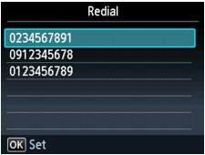

There are two methods of redialing: Automatic redialing and Manual redialing.
-
Automatic Redialing
If you send a document and the recipient's line is busy, the machine will redial the number after a specified interval.
-
Manual Redialing
You can redial to the recipients dialed using the Numeric buttons.
 Important
Important-
It may be possible that faxes will reach unintended recipients due to the misdialing or incorrect registration of fax/telephone numbers. When you send important documents, it is recommended that you send them after speaking on the telephone. For details, see Sending a Fax after Speaking on Telephone.
 Note
Note-
Automatic redialing is enabled by default.
Automatic Redialing
You can enable or disable automatic redialing. If you enable automatic redialing, you can specify the maximum number of redial attempts and the length of time the machine waits between redial attempts.
Enable and specify the automatic redialing setting on Auto redial in Advanced FAX settings under FAX settings.
Important-
While automatic redialing, the unsent fax is stored in the machine's memory temporarily until the sending fax is complete. If a power failure occurs or you unplug the power cord before automatic redialing is complete, all faxes stored in the machine's memory are deleted and not sent.
Note-
To cancel automatic redialing, wait until the machine starts redialing, then press the Stop button.
-
To cancel automatic redialing, delete the unsent fax from the machine's memory while the machine is on-standby for a redial operation. For details, see Deleting a Document in Machine's Memory.
Manual Redialing
Follow the procedure below for manual redialing.
-
Make sure that the machine is turned on.
-
Press the FAX button.
The Fax standby screen is displayed.
-
Load documents on the Platen Glass or in the ADF.
-
Adjust the scan contrast and resolution as necessary.
Note-
For details on how to adjust the scan contrast and resolution, refer to Faxing.
-
-
Press the Redial/Pause button.
The Redial screen is displayed.
 -
Use the

 button to select the recipient's number to redial, then press the OK button.
button to select the recipient's number to redial, then press the OK button. -
Press the Color button for color transmission, or the Black button for black & white transmission.
Important-
Color transmission is available only when the recipient's fax machine supports color faxing.
-
Note-
For manual redialing, the machine memorizes up to 10 recent recipients dialed using the Numeric buttons. Note that the machine does not memorize any recipients dialed using the Coded Dial or Redial/Pause button.
-
To cancel manual redialing, press the Stop button.